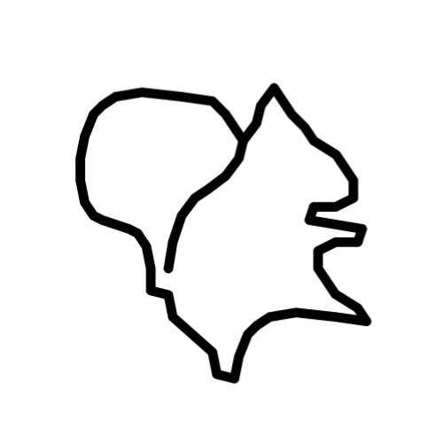

I am a junior at the University of Toronto specializing in Mathematics and minoring in Philosophy and Economics. I write about mathematics and philosophy, and I am particularly interested in Real Analysis, Logic, and the Philosophy of Mathematics. (See my profile.)
I built this website for 3 purposes:
Content includes my notes or study guides for courses at UofT, my exposition and reflection articles on mathematics and philosophy, external resources I recommend, etc. Below is the structure of the website:
